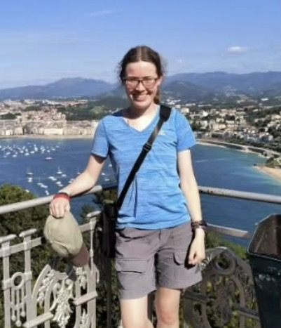
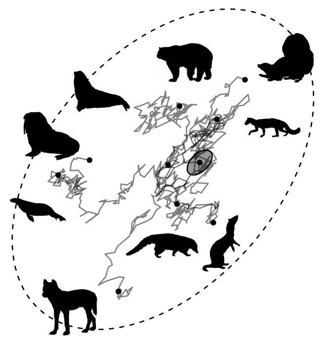
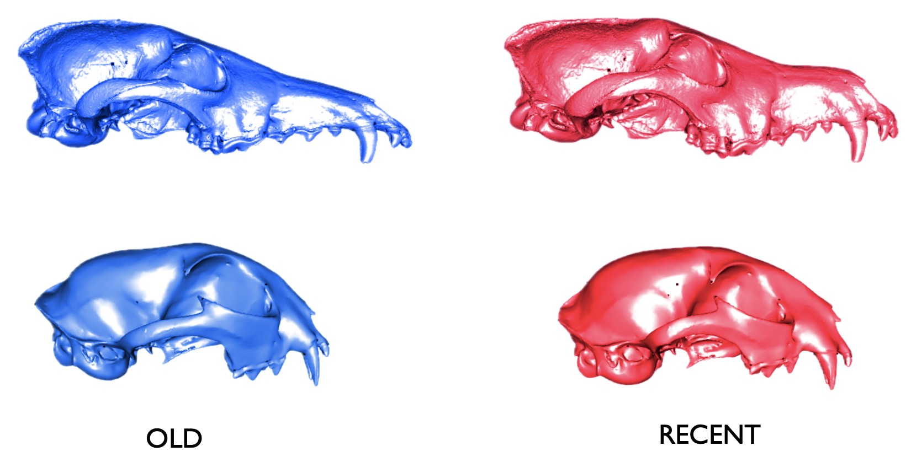

Carina receives a CAS Undergraduate Research Scholarship FY27 ↗
Congratulations to Carina Mendeck on this recognition of her undergraduate research!

Oklahoma State University · EMORPH2 Lab
How does biological form evolve?
At the EMORPH2 Lab, led by Fabio A. Machado, we investigate how developmental rules and natural selection shape animal diversity. We bring together anatomy, genetics, development, and evolutionary theory to understand how complex structures change over time, with a particular focus on mammals.

Congratulations to Carina Mendeck on this recognition of her undergraduate research!

Congratulations to Andrew Hughes on this milestone!
